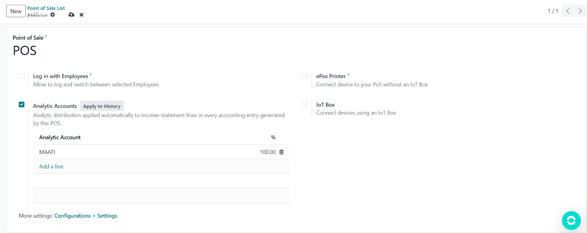
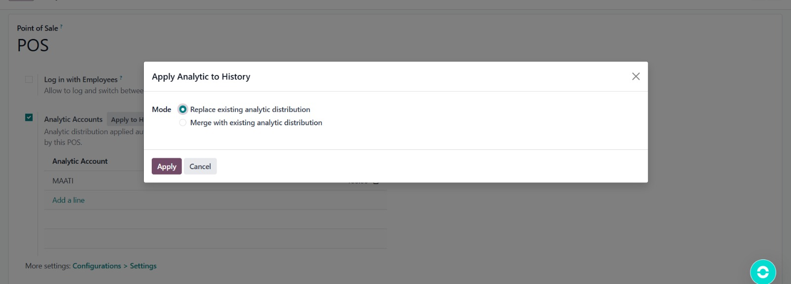

Automatically assign analytic account distributions to every income-statement journal entry generated by your Point of Sale — on session close and on customer invoices.
This module lets you define a custom analytic distribution directly on each POS configuration. The distribution is applied automatically to all P&L account lines whenever a session is closed or a customer invoice is created from a POS order — no manual entry required.
Enable Analytic Accounts on the POS configuration form and add one or more analytic accounts with their respective percentages.
On session close and on invoice creation, the distribution is written to every income / expense line automatically.
Click Apply to History to update existing accounting entries. Choose Replace to overwrite or Merge to combine.
Analytic fields appear only when the Analytic Accounting feature is active in Accounting > Settings.


| Item | Detail |
|---|---|
| Odoo Version | 19.0 |
| Dependencies | point_of_sale, account, analytic |
| New Model | pos.config.analytic.line |
| New Wizard | pos.analytic.history.wizard |
| License | LGPL-3 |